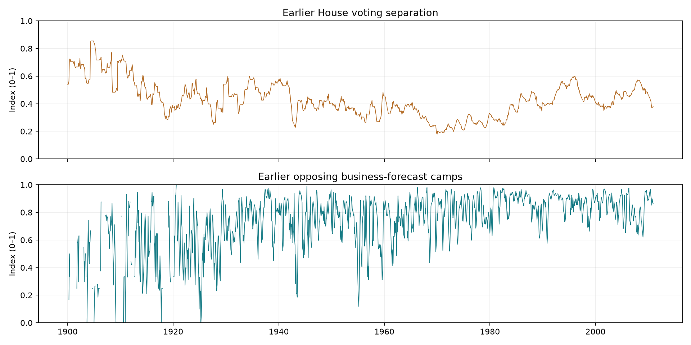
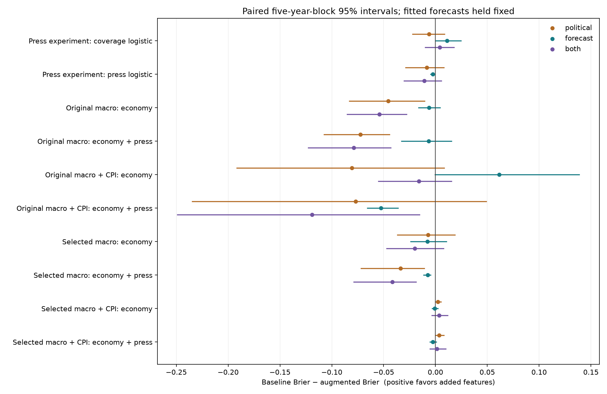
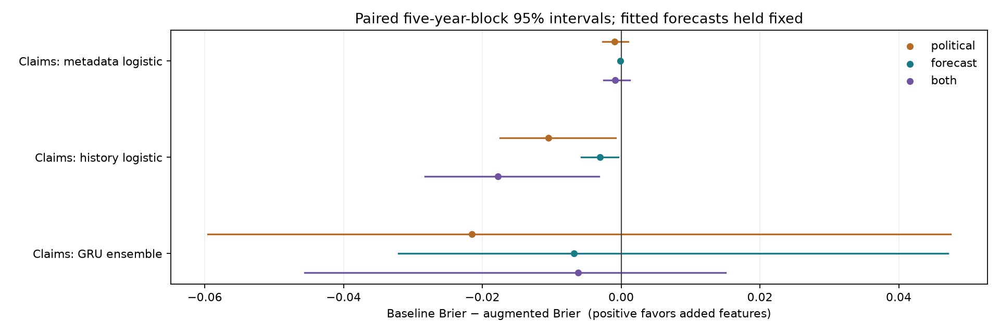

Polarization in the ProQuest models
Adding both features worsens the two headline Brier results: selected macro plus newspapers rises from 0.6228 to 0.6644; GRU claim correctness rises from 0.1929 to 0.1991. Lower loss is better. The full comparisons and uncertainty follow; these results do not establish that polarization is intrinsically uninformative.
Exploratory comparisons on annual verified ProQuest claims, 1900–2010. Every active learned model family receives two separate scalar inputs, each alone and together. Existing results remain unchanged. Constant class-frequency forecasts remain controls.
What the two features measure
Political: earlier House Democratic–Republican differences in observed yes-vote shares. This is a legislative voting proxy, not the standard Voteview NOMINATE party-mean gap and not mass or affective polarization. Current career-based ideological estimates can use later votes, so they are excluded from predictive inputs. See Voteview’s ideology documentation.
The political window uses twelve complete months ending two months before the prediction month, with one complete intervening month as a reporting buffer. Actual yea/nay votes only; at least five Democratic and five Republican voters per rollcall, and ten eligible rollcalls per window. Agenda and participation affect this proxy. Historical votes are reconstructed from the current database, not archived release vintages.
Forecast: mean 4 × positive share × negative share over the preceding three complete months of general-business forecasts. Equal-sized opposing camps score 1; absence of either camp scores 0. Equal article weights within newspaper and equal newspaper weights within month follow the existing panel. This differs from the existing three-class disagreement measure and does not measure newspaper political ideology.
Observed coverage: political 1,332/1,332 months; forecast 1,255/1,332. Missing values use training-only median imputation plus a missingness flag; no evaluation rows are removed.

Comparison design
Baseline, political only, forecast only, and both use identical targets, training rows, evaluation observations, regularization and weights within each model. Saved training-only macro selections are reused. All logistic baseline refits must reproduce saved probabilities within tolerance. The GRU baseline and all extensions are rerun with seeds 11, 29 and 47 in the same environment; epochs are selected only by prior validation log loss. New scalar inputs enter the GRU head and both claim-logistic models; their existing twelve-month history remains identical.
Binary claim Brier and three-class monthly Brier are different losses. Intervals resample five-year blocks while conditioning on fitted forecasts; they omit extraction and model-selection uncertainty. Multiple comparisons are exploratory. The short CPI study has only two blocks. A wide interval is not evidence of no effect.
Monthly economic direction
Brier loss, lower is better. Each row is a matched comparison.
| arm |
Model |
baseline |
political |
forecast |
both |
|
Original macro + CPI: economy |
0.9216 |
1.0022 |
0.8603 |
0.9375 |
|
Original macro + CPI: economy + press |
0.7721 |
0.8492 |
0.8246 |
0.8913 |
|
Original macro: economy |
0.6672 |
0.7128 |
0.6733 |
0.7212 |
|
Original macro: economy + press |
0.6249 |
0.6974 |
0.6315 |
0.7038 |
|
Press experiment: coverage logistic |
0.6391 |
0.6452 |
0.6278 |
0.6349 |
|
Press experiment: press logistic |
0.5739 |
0.5822 |
0.5766 |
0.5848 |
|
Selected macro + CPI: economy |
0.6626 |
0.6603 |
0.6634 |
0.6592 |
|
Selected macro + CPI: economy + press |
0.6588 |
0.6552 |
0.6614 |
0.6573 |
|
Selected macro: economy |
0.6327 |
0.6399 |
0.6404 |
0.6527 |
|
Selected macro: economy + press |
0.6228 |
0.6564 |
0.6303 |
0.6644 |

Excluding 2007–2009 evaluation observations
This changes evaluation only; it does not remove crisis observations from later training histories.
| arm |
Model |
baseline |
political |
forecast |
both |
|
Original macro + CPI: economy |
0.8980 |
0.8934 |
0.8955 |
0.8705 |
|
Original macro + CPI: economy + press |
0.8382 |
0.7840 |
0.8935 |
0.8369 |
|
Original macro: economy |
0.6675 |
0.7057 |
0.6768 |
0.7153 |
|
Original macro: economy + press |
0.6391 |
0.6965 |
0.6458 |
0.7013 |
|
Press experiment: coverage logistic |
0.6300 |
0.6356 |
0.6168 |
0.6234 |
|
Press experiment: press logistic |
0.5698 |
0.5796 |
0.5722 |
0.5818 |
|
Selected macro + CPI: economy |
0.5686 |
0.5606 |
0.5706 |
0.5599 |
|
Selected macro + CPI: economy + press |
0.5661 |
0.5564 |
0.5707 |
0.5602 |
|
Selected macro: economy |
0.6164 |
0.6148 |
0.6299 |
0.6310 |
|
Selected macro: economy + press |
0.6214 |
0.6387 |
0.6292 |
0.6469 |
Full metrics, paired intervals, and calibration bins with sample counts.
Claim correctness
Brier loss, lower is better. Each row is a matched comparison.
| arm |
Model |
baseline |
political |
forecast |
both |
|
Claims: GRU ensemble |
0.1929 |
0.2144 |
0.1997 |
0.1991 |
|
Claims: history logistic |
0.2364 |
0.2468 |
0.2395 |
0.2541 |
|
Claims: metadata logistic |
0.2183 |
0.2193 |
0.2184 |
0.2192 |

Excluding 2007–2009 evaluation observations
This changes evaluation only; it does not remove crisis observations from later training histories.
| arm |
Model |
baseline |
political |
forecast |
both |
|
Claims: GRU ensemble |
0.1924 |
0.1851 |
0.1797 |
0.2086 |
|
Claims: history logistic |
0.1954 |
0.2008 |
0.1964 |
0.2057 |
|
Claims: metadata logistic |
0.1835 |
0.1829 |
0.1836 |
0.1829 |
Full metrics, paired intervals, and calibration bins with sample counts.
Reproducibility and interpretation
Specification; feature provenance; public source hashes; monthly run manifest; claim run manifest. The specification precedes these polarization fits, after inspection of earlier results. No modern claims or LOC outcomes enter.
These are predictive associations, not causal estimates of polarization. Changes can reflect time trends, agenda, query selection and coverage. The features do not establish that newspapers become politically polarized or that polarization causes forecast errors. Human source validation remains unfinished.